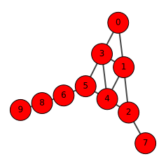
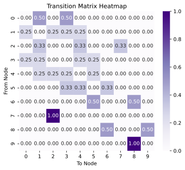
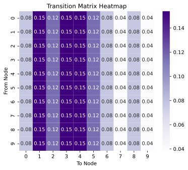
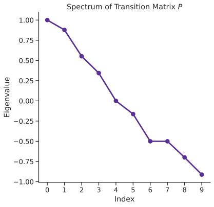

The Drunkard Who Maps the City
The big question of this module. What does a network look like to a walker who has no idea where they are going?
A Walker With No Plan
Suppose you walk in a city. You are drunk and your feet have no idea where to go. You just take a step wherever your feet take you. At every intersection, you make a random decision and take a step. This is the core idea of a random walk.
You are not trying to get anywhere, and that is exactly the point. You have no map, no destination, no memory of the street you came from. Every decision you make is a coin flip among the streets in front of you.
While your feet are taking you to a random street, after making many steps and looking back, you will realize that you have been to certain places more frequently than others. If you were to map the frequency of your visits to each street, you will end up with a distribution that tells you about salient structure of the street network. The drunkard, who understood nothing, has produced a measurement.
Here is that measurement being made, on ten nodes. Take the first few steps one at a time to see the rule, then let the tally run: the bars are the walker’s own record of where it has been.
The bars were not decoration. Two things happened in that widget, and the rest of this module is spent earning both: the tally settled onto the degrees, and it settled onto the same degrees no matter where the walk began.
Random walks are not a toy. Your Netflix session is one: you click a movie, then a recommended movie, then another. So is a Wikipedia binge from “Coffee” to “Brazil” to “Soccer”. So is a day of stock prices. In each case the object being walked on is a network, and the walk is what reveals it.
Written out, the rule you just watched is:
- Start at a node i
- Randomly choose an edge to traverse to a neighbor node j
- Repeat step 2 until you have taken T steps
In directed networks, a random walker can only move along the edge direction, and it can be that the random walker is stuck in a so-called “dead end” that does not have any outgoing edges.
Amida-kuji: A Ladder Decides Your Fate
Ladder Lottery is a fun East Asian game, also known as “鬼腳圖” (Guijiaotu) in Chinese, “阿弥陀籤” (Amida-kuji) in Japanese, “사다리타기” (Sadaritagi) in Korean, and “Ladder Lottery” in English. The game is played as follows:
- A player is given a board with a set of vertical lines.
- The player chooses a line and starts to move along the line.
- When hitting a horizontal line, the player must move along the horizontal line and then continue to move along the next vertical line.
- The player wins if the player can hit a marked line at the bottom of the board.
- You cannot see the horizontal lines in advance!
Play the Ladder Lottery game. It draws one board for you to trace, and behind it draws two thousand more with the same number of rungs, so the histogram underneath is where your chosen line actually comes out. One knob sets the rungs; Gap from even is how far that histogram is from flat. Try to answer:
- Suppose you knew you wanted to finish on line 7. With only four rungs on the board, is choosing where to start worth anything? Start at four rungs and look at the histogram.
- Now drag the rungs up, and watch Gap from even fall: about 0.6 at four rungs, 0.3 at twenty, 0.08 at sixty. At what point does your choice of starting line stop being worth anything at all?
The ladder is the smallest honest picture of what is coming. The vertical lines are the states the walker can occupy; the horizontal rungs are the transitions that move it from one state to the next. Where you land is decided by a rule you cannot see.
Be careful about where the randomness lives, because this is the one place the analogy could mislead you. A finished amida board is not random at all: it is a fixed permutation, and each starting line maps to exactly one ending line, every time. The uncertainty is in your ignorance of the board, not in your feet. What makes it a good rehearsal for random walks is the second question above: add more and more rungs, and the permutation the board induces becomes, from any starting line, as good as a uniform draw. Something unpredictable emerges from a pile of simple local rules. That emergence — and how many rungs it takes — is the subject of this module.
When we study random walks, four questions recur:
- Short-term behavior: where does the walker go in the first few steps?
- Long-term behavior: after many steps, where does it spend most of its time?
- Structural insight: what does the walker’s behavior tell us about the network?
- Applications: how do we turn this into centrality and community detection?
Before going further, get the walk under your fingers. Open the random walk simulator. Walk takes one step; Run 5,000 steps takes five thousand. The bar chart is the share of steps spent on each node, and the short mark across every bar is that node’s k/2m — the number this module is about to derive. Distance to k/2m is how far the whole chart still is from those marks. Answer these, first on the karate club network it loads by default, then on a network with two obvious communities:
- Click Walk twenty times. Does the chart look like anything yet?
- Now run five thousand steps, then five thousand more. Where does the walker spend most of its time, and how close do the bars get to their marks?
- Does the behavior of the walker inform us about the centrality of the nodes?
- On the two-community network, count how many consecutive steps the walker spends on one side before it crosses. Does the behavior of the walker inform us about communities?
- Turn the teleport knob up to 0.3 and run it again. The distance stops falling and settles well above zero. What has the teleport done to the answer? (This is the same knob that turns a random walk into PageRank, in the centrality section below.)
Why This Module Is the Hinge of the Course
Before the machinery, here is what one blind walker will buy us. Random walks are worth this much attention because they unify things we developed separately:
- Centrality (Module 6). PageRank is a random walk with teleportation; its stationary distribution is the ranking. Eigenvector centrality is what power iteration converges to, and power iteration is a walk. Degree centrality is the stationary distribution of the simple walk.
- Community structure (Module 5). Modularity is the difference between one-step and long-run co-location probabilities. Infomap and Walktrap define communities purely as regions where walks linger.
- Distance. Commute time and effective resistance give a notion of proximity that counts all routes rather than the shortest, often working better than shortest-path distance in practice.
- Embedding (Module 8). DeepWalk and node2vec turn walks into “sentences” and feed them to a language model. The embedding you get is determined by what the walk explores.
- Spreading processes. Diffusion and epidemic models are random walks with extra rules, so mixing time and spectral gap govern how fast a contagion spreads.
One process, five chapters. That is the payoff, and every term in that list is defined below.
One Step: Divide by Your Degree
A random walk is characterized by the transition probabilities between nodes. The transition probability from node i to node j is:
P_{ij} = \frac{A_{ij}}{k_i}
where A_{ij} is the adjacency matrix element and k_i is the degree of node i. Read it as a sentence: if there is an edge, split the walker’s chance evenly among all k_i of them; if there is no edge, the chance is zero.

Take node 1 in Figure 1. It has four neighbors, so a walker standing on it moves to each of them with probability 1/4 = 0.25, and to any of the other five nodes with probability 0. Node 7 has a single neighbor, so a walker on node 7 moves to node 2 with probability 1 — it has no choice at all. Every row of the matrix below is one such list of odds.

Notice what the rule does not mention: how the walker arrived at node i. The next step depends only on where the walker is standing now, never on the route that brought it there. A process with this amnesia is called Markovian, and the amnesia itself is the Markov property. It is what lets us describe the entire future with one matrix.
Written for the whole network at once, “divide every row of \mathbf{A} by that node’s degree” is exactly
\mathbf{P} = \mathbf{D}^{-1} \mathbf{A}
where \mathbf{D} is the diagonal matrix holding the degrees, D_{ii} = k_i. This one-line form is worth memorising — it is how the transition matrix is built in code, and it is the object we take apart spectrally later in the module.
We can represent all transition probabilities in a transition probability matrix \mathbf{P}:
\mathbf{P} = \begin{pmatrix} p_{11} & p_{12} & \cdots & p_{1N} \\ p_{21} & p_{22} & \cdots & p_{2N} \\ \vdots & \vdots & \ddots & \vdots \\ p_{N1} & p_{N2} & \cdots & p_{NN} \end{pmatrix}
This matrix \mathbf{P} encapsulates the entire random walk process. We can use it to calculate the probability of visiting each node after any number of steps:
- After one step: P_{ij} = p_{ij}
- After two steps: \left(\mathbf{P}^{2}\right)_{ij} = \sum_{k} P_{ik} P_{kj}
- After T steps: \left(\mathbf{P}^{T}\right)_{ij}
Let’s understand why \mathbf{P}^2 represents the transition probabilities after two steps.
First, recall that \mathbf{P}_{ij} is the probability of moving from node i to node j in one step. Now, consider a two-step walk from i to j. We can express this as:
(\mathbf{P}^2)_{ij} = \sum_k \mathbf{P}_{ik} \mathbf{P}_{kj}
This equation encapsulates a key idea: to go from i to j in two steps, we must pass through some intermediate node k. Let’s break this down step by step:
- The probability of the first step (i to k) is \mathbf{P}_{ik}.
- The probability of the second step (k to j) is \mathbf{P}_{kj}.
- The probability of this specific path (i → k → j) is the product \mathbf{P}_{ik} \mathbf{P}_{kj}.
- We sum over all possible intermediate nodes k to get the total probability.
And we can extend this reasoning for any number of steps t. In summary, for any number of steps t, \left( \mathbf{P}^t \right)_{ij} gives the probability of being at node j after t steps, starting from node i.
Where the Walker Ends Up: Degree, and Nothing Else
The stationary distribution is the probability distribution of the walker after infinitely many steps — the long-term behavior of the walker.
Assume for the moment that such a distribution exists. (For an undirected network it does, provided two conditions hold; we state them below, because both fail in networks you will actually meet.) At the stationary state the walker must satisfy the balance condition
x(t+1) = x(t) \; \text{for a large } t,
where x(t) is the probability distribution of the walker at time t. We write it as a row vector,
x(t) = \begin{pmatrix} x_1(t) & x_2(t) & \cdots & x_N(t) \end{pmatrix}
with x_i(t) the probability of being at node i at time t, and \sum_i x_i(t) = 1. Writing it as a row is a convenience, not a deep choice: it lets one step of the walk be multiplication on the right by \mathbf{P}, so the formula reads left to right in the order things happen. The balance condition means the system has become time invariant: the probability of being at node i is the same at time t and at time t+1.
What does x(t) look like in the stationary state? Represent x(t) using \mathbf{P} and an initial distribution x(0):
x(t) = x(t-1)\,\mathbf{P} = x(0)\,\mathbf{P}^t .
So the question becomes: what does \mathbf{P}^t look like for large t?
Take the matrix apart before doing any algebra. Row i of \mathbf{P}^t is one walker’s whole future: it lists where a walker that started at node i might be t steps later. Below, every entry is drawn as a square of ink — darker for likelier — so a row is a stripe you can read at a glance. Step through the first three powers one at a time, then drag t and watch what becomes of the rows.
The last frame of that widget, written out as numbers, is Figure 3.

Compare it with Figure 2, where no two rows had anything in common. That is the whole phenomenon in one picture: after enough steps, the walker’s position no longer carries any trace of where it began. Note what did not disappear. The columns of Figure 3 are still unequal — column 1 is four times column 7 — and that surviving difference is the answer to the question the next section asks.
Why does \mathbf{P}^t have this peculiar property? Because of the spectral properties of \mathbf{P}. We can rewrite the balance condition as an eigenvalue equation:
\pi = \pi \mathbf{P}
where \pi=\lim_{t\to\infty} x(t) is the stationary distribution. So \pi is parallel to a left eigenvector of \mathbf{P}.
\pi is parallel to that left eigenvector, not equal to it. An eigenvector has no canonical length — any multiple of it is still an eigenvector — and numerical libraries happen to hand you the one of unit Euclidean length. We want the multiple whose entries sum to 1, so rescale by dividing through by the sum.
That left eigenvector is the one associated with the largest eigenvalue of \mathbf{P}, as per the Perron–Frobenius theorem. The intuition is conservation: the number of walkers in a graph is unchanged by a transition, which is evident from \sum_{j} P_{ij}=1 (if the row sum were greater than 1, walkers would multiply and explode to infinity). In the language of spectra, nothing is rescaled, and that corresponds to an eigenvalue of exactly 1 — visible as the topmost point in Figure 4.

The other eigenvalues are less than one in magnitude and describe the short-term behavior of the walk, which is the subject of the next section.
The Answer Is the Degree Sequence
Calling \boldsymbol{\pi} “the leading left eigenvector” describes it but does not tell you what it is. For an undirected network the answer is startlingly simple, and you can guess it before proving it.
Feel it first. The walker never chooses a node — it chooses an edge. So a node with twice as many edges catches the walker roughly twice as often. That is the whole idea:
\pi_i \propto k_i.
To turn the proportionality into an equality, the probabilities must sum to one. Every edge contributes 2 to the total degree (one at each end), so \sum_i k_i = 2m for a network with m edges — the handshake count from Module 1. Dividing by that total gives
\pi_i = \frac{k_i}{\sum_\ell k_\ell} = \frac{k_i}{2m}
In the long run, the fraction of time the walker spends at a node is its share of the edge endpoints in the network. Nothing else about the structure survives.
Put numbers on it with Figure 1, which has m = 13 edges and therefore 2m = 26 edge endpoints. Node 1, with k_1 = 4, gets \pi_1 = 4/26 \approx 0.154; node 7, with k_7 = 1, gets \pi_7 = 1/26 \approx 0.038. Rounded to two decimals, 0.15 and 0.04 are exactly the numbers printed in every row of Figure 3 — and they are the two markers the walker’s bars landed on at the top of this page.
Checking the guess takes one line. Substitute it into the balance condition \boldsymbol{\pi} = \boldsymbol{\pi} \mathbf{P}:
\left(\boldsymbol{\pi}\mathbf{P}\right)_j = \sum_i \pi_i P_{ij} = \sum_i \frac{k_i}{2m}\cdot\frac{A_{ij}}{k_i} = \frac{1}{2m}\sum_i A_{ij} = \frac{k_j}{2m} = \pi_j .
The degrees cancel, which is the whole trick: the k_i that makes a hub attractive is the same k_i that thins out each of its outgoing steps.
Two consequences to carry forward. First, the stationary distribution of a simple walk on an undirected network is degree centrality, rescaled — which is why Module 6’s walk-based measures needed teleportation to say anything new. Second, this holds only for undirected networks; on a directed network \pi_i \propto k_i is false, and PageRank exists precisely to supply a well-behaved substitute.
When a Stationary Distribution Fails to Exist
We assumed above that a stationary distribution exists. Two conditions make that assumption safe, and both fail in networks you will actually meet.
Irreducibility. The walker must be able to reach every node from every node. If the network is disconnected, a walker starting in one component never visits the others, and there is no single stationary distribution — there is one per component. This is why we usually extract the giant component (Module 1) before doing anything.
Aperiodicity. The walker must not be trapped in a rigid rhythm. Consider a bipartite network — nodes split into two sides, edges only between sides. A walker starting on the left is on the right after one step, back on the left after two, and so on forever. The distribution oscillates with period 2 and never settles, even though the network is perfectly connected.
A random walk with both properties is called ergodic, and only then are we guaranteed a unique stationary distribution reached from any starting point. The fix for periodicity is easy: add a small chance of staying put (a “lazy” walk), or add teleportation as PageRank does. Either one destroys the rigid alternation.
You can see both conditions in the spectrum. Disconnection shows up as eigenvalue 1 appearing more than once — one copy per component. Periodicity shows up as an eigenvalue at exactly -1, the mode that flips sign at every step and therefore never decays.
A Walk Looks the Same Played Backwards
Undirected random walks have a symmetry that makes much of the theory work. In the stationary state, the probability of being at i and stepping to j equals the probability of being at j and stepping to i:
\pi_i P_{ij} = \frac{k_i}{2m}\cdot\frac{A_{ij}}{k_i} = \frac{A_{ij}}{2m} = \frac{k_j}{2m}\cdot\frac{A_{ji}}{k_j} = \pi_j P_{ji}
This is called detailed balance, and a walk satisfying it is reversible: a recording of the walk played backwards is statistically indistinguishable from one played forwards.
Reversibility is what lets us symmetrize \mathbf{P} in the next section — the trick that makes the spectral analysis possible at all. Random walks on directed networks are generally not reversible, which is exactly why they are harder.
How Long Until the Walker Forgets Where It Started?
The stationary distribution says where the walker ends up. It says nothing about when. Drop a walker on a ring of 1000 nodes and it takes on the order of a million steps before its position is anywhere close to uniform. Drop it on the karate club and a dozen steps will do. Same kind of destination, wildly different waiting time.
Feel it first. Start one walker at node 1 and another at node 7. At t = 1 their distributions are completely different — one is spread over four neighbors, the other sits on node 2 with certainty. At every step the difference shrinks a little. Mixing time is how long you must wait before that difference drops below a tolerance \epsilon you are willing to accept: the moment when knowing the starting node tells you essentially nothing about where the walker is now.
t_{\text{mix}} = \min\left\{t : \max_{x(0)} \|x(t) - \boldsymbol{\pi}\|_{1} \leq \epsilon\right\}
The picture that explains the answer is Figure 3 again: mixing time is how many powers of \mathbf{P} you must take before the rows become indistinguishable.
One number controls it. The gap between the walker’s distribution and \boldsymbol{\pi} can be split into modes, one per eigenvalue of \mathbf{P}, and each step multiplies mode \ell by its eigenvalue \lambda_\ell. The largest eigenvalue is \lambda_1 = 1: that mode is \boldsymbol{\pi}, and it never decays. Every other mode shrinks, and the slowest of them is the second largest, \lambda_2. After t steps the leftover error is of size \lambda_2^{\,t}, so the whole clock is set by how far \lambda_2 sits below 1. (Strictly it is the largest eigenvalue in magnitude other than 1 that matters: a mode at -1 flips sign instead of decaying, which is the periodicity problem from the previous section.)
That distance has a name. The spectral gap is 1 - \lambda_2, and its reciprocal
\tau = \frac{1}{1 - \lambda_2}
is the relaxation time — the number of steps in which the slowest mode shrinks by a factor of e. Mixing time is the relaxation time multiplied by a logarithmic factor that pays for how small a tolerance \epsilon you demanded and how rare the rarest node is:
t_{\text{mix}} < \frac{1}{1-\lambda_2} \log \left( \frac{1}{\epsilon \, \min_{i} \pi_i} \right) = \tau \log \left( \frac{1}{\epsilon \, \min_{i} \pi_i} \right)
Read that carefully: \tau on its own is not a bound on t_{\text{mix}}. It is a time scale — mixing takes a few \tau’s, and the logarithm says how many. Demand a tighter \epsilon, or add a node so rare that \pi_i is tiny, and you pay for it inside the logarithm.
The same quantity is often written with the normalized Laplacian, whose second smallest eigenvalue is \mu = 1 - \lambda_2, giving \tau = 1/\mu. That is the same \mu Module 5’s spectral clustering minimises, which is why “good cut” and “slow mixing” turn out to be the same statement.
A worked number. Take two 5-cliques joined by a single edge — ten nodes, one obvious bottleneck. Its transition matrix has \lambda_2 = 0.927, so the spectral gap is 0.073 and \tau \approx 14 steps. Now merge the two cliques into one 10-clique, keeping the same ten nodes: \lambda_2 = -1/9, the gap is 1.11, and \tau \approx 0.9 steps — a single step essentially finishes the job. Same node count, a fifteen-fold difference in mixing, and the only thing that changed is a bottleneck. Hold on to this: it is the reason random walks can find communities at all.
Why the eigenvalues of \mathbf{P} govern \mathbf{P}^t at all — and the trick that makes a non-symmetric \mathbf{P} behave like a symmetric one — is worked out in the appendix, which also shows the leading mode reproducing \pi_i = k_i/2m on its own.
Return, Hit, Commute, Cover: Four Clocks on a Walk
The stationary distribution answers “where does the walker end up in the long run?” and mixing time answers “how long until we can stop caring where it started?”. A third family of questions is about specific trips, and it gives us a set of distance-like quantities that are often more useful than shortest paths.
Return Time
Start at node i and walk until you come back. How long does that take on average?
The answer follows from the stationary distribution with no extra work. If the walker spends a fraction \pi_i of its time at node i, then it visits i once every 1/\pi_i steps on average:
\mathbb{E}[\text{return time to } i] = \frac{1}{\pi_i} = \frac{2m}{k_i}
In Figure 1, node 1 is revisited every 26/4 = 6.5 steps on average, while node 7 waits 26/1 = 26 steps. At larger scale: a hub with k_i = 100 in a network with m = 1000 edges is revisited every 20 steps; a leaf with k_i = 1 waits 2000 steps.
Hitting Time and Commute Time
The hitting time h_{ij} is the expected number of steps to reach j for the first time, starting from i.
The crucial and surprising property is that hitting time is not symmetric: h_{ij} \neq h_{ji} in general. Walking from a leaf to a hub is quick — most steps lead toward well-connected regions. Walking from the hub back to that specific leaf takes far longer, because the hub has a hundred other places to go. Asymmetry is not a defect; it reflects a real feature of the network that shortest-path distance, which is always symmetric, cannot express.
If you want symmetry, take the round trip. The commute time is
C_{ij} = h_{ij} + h_{ji}
which is symmetric and behaves much more like a distance. Two nodes have small commute time when they are connected by many short routes, not merely one — so unlike shortest-path distance, commute time rewards redundancy of connection.
Replace every edge with a 1-ohm resistor and the analogy becomes exact: commute time is proportional to the effective resistance R_{ij} between the two nodes, C_{ij} = 2m \cdot R_{ij}. Resistors in parallel reduce resistance, which is the electrical statement of “many routes make nodes close”. This correspondence lets you import a century of circuit theory into network analysis, and it explains why commute time is a better similarity measure than shortest path for recommendation and link prediction.
Cover Time
The cover time is the expected number of steps to visit every node at least once. It matters whenever a walk is being used to explore or sample an unknown network — crawling the web, sampling users of a social platform — because it bounds how long you must run before you can hope to have seen everything. Cover time grows roughly like N \log N on well-connected networks and much worse on networks with bottlenecks.
Five Ways to Change the Rules
The simple random walk — uniform choice among neighbors — is a starting point, not the only option. Each variant below changes the transition probabilities and therefore changes what the walk reveals.
Biased random walks. Instead of choosing uniformly, weight the choice. A degree-biased walk favors (or avoids) high-degree neighbors; the stationary distribution shifts accordingly, and you can even design a bias that makes it uniform, which is useful for unbiased sampling. An attribute-biased walk prefers neighbors similar to the current node.
Random walk with restart (teleportation). At each step, with probability \alpha jump back to the starting node instead of following an edge. This keeps the walk near its origin, and its stationary distribution is a measure of proximity to that origin. You have already seen this: it is personalized PageRank from Module 6, viewed as a process rather than an equation.
Second-order walks. Let the next step depend on the previous node as well as the current one, so the walker can be discouraged from backtracking or encouraged to stay local. This breaks the Markov property in the node state — the next step now depends on history, not only on the current position — and it is exactly the machinery node2vec uses in Module 8.
Self-avoiding walks. Forbid revisiting any node. This sounds like a small change but is a much harder object: the walker can get stuck with nowhere to go, and the process is not Markovian at all. Self-avoiding walks are important in polymer physics and in certain sampling algorithms.
Walks on directed networks. Transition probabilities become asymmetric, \pi_i \propto k_i no longer holds, and the walk can reach a dead end — a node with no outgoing edges — where it simply stops. Teleportation is the standard remedy, which is precisely why PageRank needs it.
When Nobody Knows the Shortest Path
If the stationary distribution ranks nodes by how often a walker visits them, it is already a centrality — and for undirected networks it is just degree centrality in disguise, since \pi_i \propto k_i. Walk-based thinking becomes genuinely new when we look at trajectories rather than the endpoint.
Random walk betweenness. Shortest-path betweenness (Module 6) assumes that whatever flows through the network knows the optimal route. Rumors, money and infections do not. Random walk betweenness instead counts how often a random walk from s to t passes through node i, averaged over all pairs (s,t). Nodes that lie on many plausible routes score highly, even when they are on no shortest path at all. It is also more stable: adding one edge can reroute many shortest paths at once, but it barely perturbs a diffusive flow.
Random walk closeness. Replace shortest-path distance with expected hitting time and you get a closeness measure that accounts for the number of routes, not just the shortest one.
The pattern is general and worth remembering: for almost every shortest-path-based quantity there is a random-walk counterpart. The shortest-path version asks “what is the best route?”; the random-walk version asks “what happens if nobody knows the best route?” Which one you want depends entirely on what is flowing.
Communities Are Where the Walker Gets Stuck
Random walks reveal community structure because of the worked number above. Before reaching the steady state, a walker tends to remain within its starting community and only gradually leaks into the others.
Take that literally and watch it happen. Below are the two joined cliques from the mixing-time section, with seven nodes on each side instead of five — which only deepens the trap, \tau = 27 steps rather than 14. Follow one walker step by step, and at the same time watch a crowd of a hundred walkers released with it drain out of the room they all started in. Then open more doors and see what changes.
Every method in this section is a different way of charging for that delay.
Modularity Is a Short Walk Minus a Long One
Modularity can be interpreted through random walks (Delvenne et al. 2010):
Q = \sum_{ij} \left(\pi_i P_{ij} - \pi_i \pi_j \right) \delta(c_i, c_j)
Modularity as it is defined in Module 5 makes no mention of walks at all:
Q = \frac{1}{2m} \sum_{ij} \left( A_{ij} - \frac{d_i d_j}{2m} \right) \delta(c_i, c_j)
Push the constant 1/2m inside the bracket, then split each term so that a factor of d_i/2m appears in front:
\frac{A_{ij}}{2m} = \underbrace{\frac{d_i}{2m}}_{\pi_i} \cdot \underbrace{\frac{A_{ij}}{d_i}}_{P_{ij}} = \pi_i P_{ij}, \qquad \frac{d_i d_j}{(2m)^2} = \underbrace{\frac{d_i}{2m}}_{\pi_i} \cdot \underbrace{\frac{d_j}{2m}}_{\pi_j} = \pi_i \pi_j .
Substituting both gives the random-walk form. Nothing was assumed — modularity was a statement about random walks all along; we simply had not yet met \pi_i = d_i/2m and P_{ij} = A_{ij}/d_i to recognise it.
where:
- \pi_i = \frac{d_i}{2m} is the stationary distribution of the random walk
- P_{ij} is the transition probability between nodes i and j
- \delta(c_i, c_j) is 1 if nodes i and j are in the same community, 0 otherwise
Read the two terms as two clocks on the same pair of nodes:
- \pi_i P_{ij} is the probability that a walker in the stationary state is at i and is at j one step later.
- \pi_i \pi_j is the probability that it is at i now and at j after so many steps that it has forgotten i — equivalently, the chance of finding two independent long-run walkers at i and at j.
The \delta(c_i, c_j) keeps only pairs inside the same community. So modularity is: how much more often a short walk stays inside a community than a long walk would by chance. High modularity means walkers linger.
Delvenne et al. (2010) extends modularity to multi-step random walks, replacing “one step later” with “t steps later”, which identifies communities at different resolution scales.
Infomap Compresses the Trajectory
While modularity provides one approach to community detection through random walks, Infomap offers an information-theoretic perspective (Rosvall and Bergstrom 2008, 2009).
Infomap asks: how can we most efficiently describe the path of a random walker through a network? The key insight is that if a network has strong community structure, a walker spends most of its time within communities and makes only occasional jumps between them. Such a trajectory can be compressed using a two-level code:
- Module code: a unique identifier for each community
- Exit code: a special symbol indicating that the walker leaves a community
- Node code: identifiers for nodes within each community
Node names can then be reused across communities — like street names that repeat in different cities — so the description gets shorter exactly when walks stay put. Infomap searches for the partition that minimizes the average number of bits needed to describe the walk.
Walktrap Turns the Trap Into a Distance
Infomap compresses a trajectory. Walktrap (Pons and Latapy 2005) uses the same trapping intuition more directly, as a similarity measure.
The idea: run short random walks of a fixed length t from every node. If two nodes are in the same community, a walker starting at either one ends up in roughly the same places, so their t-step distributions look alike. Define the distance between nodes i and j as the difference between their t-step distributions (scaled by degree), then agglomerate nodes bottom-up, always merging the pair that increases this distance least.
The choice of t matters, and it sets the scale. Small t sees only local structure; large t washes everything out toward the stationary distribution, which knows nothing about communities. Somewhere in between the walk is long enough to explore a community but too short to escape it — and that is where communities become visible.
Structure Shapes How a Walk Behaves
Everything above depends on the network the walker is placed on. Four cases are worth having in mind:
- Regular networks (a lattice, a ring): the stationary distribution is uniform, since all degrees are equal. Mixing is slow, because the walker can only diffuse outward one step at a time — it takes on the order of N^2 steps to cross a ring of N nodes.
- Small-world networks: the shortcuts from Module 2 dramatically speed up mixing. A few long-range edges let the walker jump across the network instead of crawling around it, which is the dynamical counterpart of the short path lengths we measured there.
- Scale-free networks: hubs dominate the stationary distribution, since \pi_i \propto k_i. Mixing is fast — almost every walk passes through a hub within a couple of steps, and from a hub anywhere is reachable. Hitting times are strongly asymmetric, as discussed above.
- Networks with community structure: mixing is slow, and slow for an informative reason. The walker is trapped inside its community for a long time before escaping, which shows up as a small spectral gap — the 0.073 we computed for the two joined cliques. This is the property Infomap and Walktrap exploit; the “defect” is the signal.
What You Can Now Do
You started with a drunkard who understood nothing about the city. You can now say precisely what the drunkard measures:
- Write down the transition matrix \mathbf{P} = \mathbf{D}^{-1}\mathbf{A} of any network and say what one step, two steps and t steps mean.
- State and check the stationary distribution \pi_i = k_i/2m, and say when it fails to exist.
- Read a spectral gap as a mixing time, and a small gap as a bottleneck.
- Compute return times from \pi, and explain why hitting time is asymmetric while commute time is not.
- Explain, in one sentence each, how PageRank, modularity, Infomap, Walktrap and node2vec are all the same walk with different rules.
Next:
- Hands-on: Walking Randomly, on Purpose — build \mathbf{P}, iterate it, and watch the rows collapse onto the degree sequence.
- Exercises and Assignments — the pen-and-paper sheet, the interactive demos, and the module assignments.
- Appendix: Why the Second Eigenvalue Sets the Clock — the spectral derivation behind the mixing-time result.